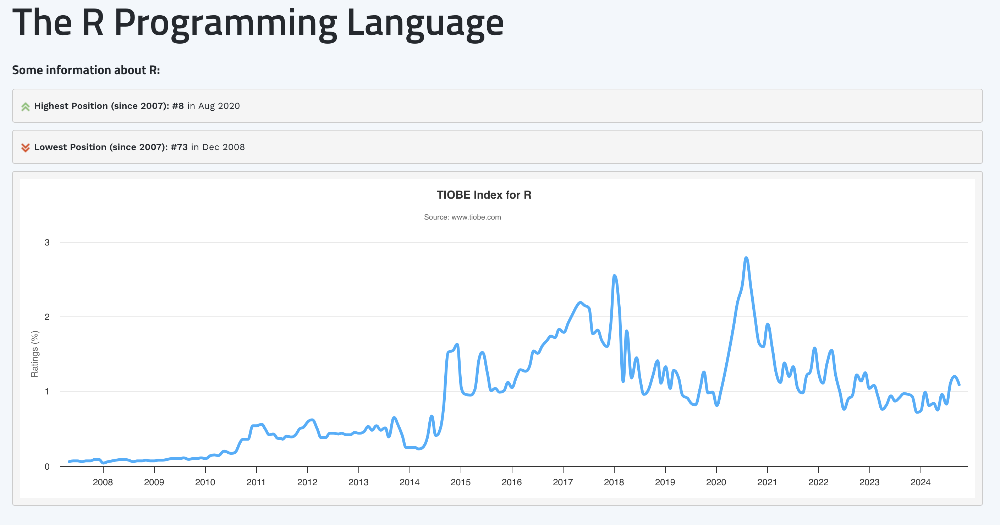

2 The Big Picture
This is a book about analyzing dyadic data with latent variables using the SEM framework in R, and I think your experience reading the remainder of the book will be aided by providing you with a rapid-fire tour of the bigger themes within it (and an introduction to some key jargon).
So, let us begin with that introductory phrase: analyzing dyadic data with latent variables using the SEM framework.
2.1 What is “dyadic data”?
Putting a finger on what dyadic data is, specifically, is surprisingly difficult when you begin to think of variety of ways in which the organisms we study (people, animals, nation-states, etc.) can, and do, “pair up”. And so in some ways, it’s easier to begin by stating what dyadic data is not.
Dyadic data is not data from organisms that have nothing in common. How much nothing? Total. Imagine you ran a goofy study where you experimentally assigned people to pairs and estimated the correlation between pairs on Trait X. In the long run, it should be \(r = .00\), right? Okay: those data are not dyadic. You should be fine to structure these data in such a way that allows you to analyze them as coming from independent observations, and go on with your business.
Eliminating data from organisms that have nothing in common still leaves a lot of possible contexts on the table as potentially dyadic. At the opposite end of the spectrum of dyadic-ness are data that come from organisms that totally overlap. Though contexts like this are rare (rare enough that I can only think of: data from a sample of identical twins), they probably would satisfy our intuition-based criteria of what is dyadic data.
The tricky cases are those in-between: are data from research where organsism have something (but not everything) in common, dyadic data? For example, what if you collect data from a classroom (\(n = 200\)) and a couple of pairs of individuals (pair 1 and pair 2, who otherwise do not interact) happen to share a hometown? Or in a sample of beetles ($n = 60) a few pairs (pair 1, pair 2, and pair 3), happen to be sibblings from the same brood?
Though examples like these contain dyads, I would not call the affiliated datasets dyadic. This is because the paired nature of some observations is inconsistent; there are a few dyads/pairs, but most of the data otherwise comes from individuals, and it’s not clear how a researcher would systematically be able to identify the linked observations between the small number of dyads.
Instead, let us consider data to be “dyadic data” if it is dyadic by design. That is, a researcher voluntarily deployed an approach to collecting data in such a way that all organisms in the sample are members of a dyad, known to the researcher. In this book, we will exclusively deal with an approach to analysis of quantitative dyadic data, though qualitative dyadic research designs are also possible (at least for human-based samples).
We will see in Chapter 3 that there are further ways we can conceptualize and categorize dyadic data–and the analytic techinques in this book are most useful to only one of these dyadic data designs–but that is a sufficient understanding of “dyadic data” for now.
2.2 What are “latent variables”?
What, then, are these so-called latent variables, and what is useful or interesting about them? I like Dictionary.com’s definition of latent as a starting place:
[leyt-nt] present but not visible, apparent, or activated; existing as potential
Typically, researchers depict latent variables (vs. “observed” or “manifest” or “indicator” variables) in a particular way when creating figures of their statistical models. Specifically, variables depicted as circles or ovals are latent variables, whereas variables depicted as squares or rectangles are observed variables (i.e., that are directly measureable). This can get a bit confusing, for a couple reasons, including:
- the same psychological construct (e.g., “self-esteem”)–and even the same measure of the same construct (e.g., the Rosenberg Self-Esteem Scale)–can be specified as a latent variable in one model, and an observed variable (e.g., an average or sum of item scores) in another. That is, even if someone believes a construct to be latent, how it is modeled remains an analyti choice, and
- observed variables take the same shape in these kinds of diagrams (i.e., squares) but can have very different causal roles in the model. For example, one observed variable may be for the responses to a particular item for a given latent variable (modeled latently); another may be a predictor variable; another may be an outcome variable.
2.2.1 A Brief Bit of History
But what use is a variable that you cannot directly observe? Social scientists have been interested in latent variables since as far back as the late 1800’s and early 1900’s. A classic example is Spearman (1904) (of the “Spearman correlation coefficient” fame)(REF). Spearman was psychologist who was interested in, among other things, mental abilities. At the time, there were a number of competing theories of ways to categorize “types” or “kinds” of mental abilities (e.g., visual, memory-based, spatial, etc.,), and how to organize them. Spearman’s contributition to this literature was noteworthy, as he provided evidence for a latent kind of generalized intelligence (which he dubbed “g”)–not a form of mental ability you could directly see or appraise, but which shaped performance on all tests of various mental abilities to one extent or another. The impact of this work was tremendous, both in terms of its theoretical value and the way it contributed to subsequent statistical methodology. With respect to the former, Spearman helped to establish the plausibility of latent variables (of which generalized intelligence may just be one) as important determinants of social and psychological processes. Methodologically, meanwhile, through is work, Spearman “casualy” provided one of the first exemplars of factor analysis (and a very specific kind of it, at that)–an analytic approach that would come to play a central role in a staggering amount of future research. Indeed, factor analysis is the beating heart of many of the models of dyadic data we will consider in this book.
The notion of latent generalized intelligence may seem reasonably intuitive, but what of latent variables in dyadic data? Here, I must profess, it’s easy for me to provide exemplars that work in the discipline of psychology, and much more difficult to provide examples that work in disciplines farther afield (e.g., ecology). Still, let me try.
For my money, the game-changing moment in Psychology to open the door to the study of latent variables was the Cognitive Revolution. The theoretical coin of the realm before the Cognitive Revolution was, for many decades, Behaviorism. And under Behaviorism–specifically, the edicts of “Methodological Behaviorism” (WATSON 1924 REF)–the experience of thought and feeling was thought to be bereft of scientific value. Only that which could be seen, directly–behavior–was amenable to scientific inqiury. The Cognitive Revolution was largely responsible for upending this ban on studying thoughts and feelings, and with that, it became open-season to scientifically study intrapsychic phenomena like attitudes, beliefs, emotions, motives, and values. These concepts represent the kind of psychological terrain where wild latent variables may be found, and studied.
2.2.2 Typologies of Latent Variable Models
The kind of latent variables we will focus on modeling, throughout this book, have a few notable features that we will expand upon later, but which must be at least “gestured” at now.
First, and most importantly, they are reflective latent variables, which means the direction of causality flows from unobservable entity, to measurable entity. For example, latent depression–which cannot be directly seen, or assessed–causes someone to lose sleep, have low mood, etc. (and thereby indicate as much in their questionnaire responses). Not the other way around. Those kinds of latent variables are referred to as formative (Bollen and Diamantopoulos (2017), Rhemtulla, Van Bork, and Borsboom (2020)) –socioeconomic status is a classic example–and we shan’t speak of their kind any further.
Another important property is that we will focus exclusively on continuous/dimensional latent variables. That is, latent variables that exist on some sort of numeric scale (think ratio scale of measurement, STEVENS REF), where there can be smaller and larger precise amounts of the latent stuff. Latent variables can, however, be categorical/discrete instead–representing an underlying set of unobserverable categories (often referred to as mixtures), which may be ordered or unordered. Though mixture modeling is possible, with latent class analysis(Collins and Lanza (2009)) and latent profile analysis (Pastor et al. (2007), Rosenberg et al. (2018)) its classic instantiations, extending these frameworks to dyadic data is not without its complications1. Trust me that learning how to deploy latent dimensional models to dyadic data will be task enough. Besides, the vast majority of psychological entities are dimensional, not categorical (Haslam, Holland, and Kuppens (2012), OTHER HASLAM REF).
Finally, the examples of dyadic SEM we will traverse in this book will all use continuous (or continu-ish) indicator or manifest variables (i.e., in which the underlying latent variable is reflected), like responses to self-report questionnaire items with some sort of likert-like rating scale. Discretely scaled indicators can be used with dyadic SEM, but require the use of different estimators (Chapter 7), and there parameter estimates often have a different corresponding interpretation. We’ll see if I make time/space, when writing this book, to discuss these sorts of models, but they won’t be the prototypical case.
2.2.3 Analtyic Use-Cases of Latent Variables
Is all of this sounding somewhat complicated? It is.
Are latent variable models still worth using? I think so.
What are latent variable models good for, then? Excellent question.
Latent variable models of the kind we’ll be indulging have, in my view, at least two primary, and sometimes overlapping, use-case. We’ll cover both in more detail later, but for now, in brief:
Latent variable models can improve the estimation accuracy of your effects If you analyze your desired pattern of linear relations between your constructs of interest using (i) linear regression using composite scores (e.g., average or sum scores) as stand-ins for your constructs, and again using (ii) SEM with latent variables, and the gospel population truth was that your constructs came from a universe in which they were indeed latent variables (a “big, if true” proposition, see Rhemtulla, Van Bork, and Borsboom (2020)), then methodological scholarship strongly suggests the latter will return closer estimates to the population values of your effects of interest (e.g., slopes, correlations, etc.,) than the former (Cole and Preacher (2014), Ledgerwood and Shrout (2011)), including for dyadic models like the actor-partner interdependence model (APIM) (Kim and Kim (2022)). You may have heard of this whole ‘crisis’ of relicability/credibility in the social (and medical) sciences (Open Science Collaboration (2015), Vazire, Schiavone, and Bottesini (2022))? Many have suggested (e.g., Flake and Fried (2020), Hussey and Hughes (2020)) that measurement problems play a focal role in this crisis, and therefore a statistical framework that renders more trustworthy estimates of effects could be very useful indeed! And,
Latent variable models are distinctively useful for interogating differences in bias in measurement and/or latent conceptualization A tacit assumption of most quantiative analyses is that assessment procedures work more or less than same across peoples, and that (when studying psychological entities) people have the same psychological concept in mind when responding to questionnaire prompts. However, there’s rich historical evidence of psychological assessments working better and worse for some groups of people than others (EXAMPLES/REFS), and increasing evidence that different groups of people have different notions in mind when you ask them questions about squishy constructs, like political identity, sexualit, etc., (EXAMPLES/REFS). Latent variable modeling techniques offer unmatched capacity to evaluate whether assessments and conceptualizations are shared–or differ–across groups and other design features like time (Little (2013)), and/or dyadic partner membership (Sakaluk, Fisher, and Kilshaw (2021)).
2.2.4 In Short
In brief, latent variables have been of interest in the field for a long, long time. They come in different varieties (only some of which we’ll discuss in this book), and modeling them imposes some additional analytic complexity, but this can be worth it for the gains you make in estimation accuracy, and assurances around the generalizability of your assessment procedure and/or your participants’ conceptualizations2
2.3 What is “structural equation modeling (SEM)” ?
You likely have a workflow by which you determine what analysis is appropriate for you to pursue, given the data that you have. Have a binary outcome variable that you want to predict from a slew of predictor variables? A binary logistic regression model is probably the way to go. Have 20 or more days worth of questionnaire responses from a sample of individuals across a “daily diary” design? You’re probably in line for some kind of multilevel model.
Likewise, SEM is an analytic framework that accomodates the modeling of certain kinds of data. The main distinctive feature is that unlike linear regression, logistic regression, or mulitlevel modeling–which only enable the analysis of one outcome variable at a time (i.e., they are univariate models)–SEM is a multivariate framework for data analysis, which means, it faciltates the fitting of linear models to multiple outcome variables simultaneously3.
The multivariate-friendly feature of the SEM framework is key for dyadic SEM with latent variables, as each latent variable we want to model will require us to have multiple indicators that are causal manifestations (i.e., outcomes) of it.
What kind of outcome variables? Like I said, we’ll focus on continuous outcome variables in this book for the most part4. And like multilevel modeling, SEM has some capacity to accomodate dependent data (like from dyadic designs, and/or repeated assessments), though SEM can only handle so much dependency (~10 waves of data?) before models get unduly complex (we’ll return to this in Chapter 27).
Sounds like SEM is kind of an “all in one” analysis framework, doesn’t it? That’s because it is–and this is one of the reasons I’m such a fanatic about it! But this flexibility means that it’s worth clarifying some language up about how SEM is used. SEM can clearly be used for a variety of purposes–including the modeling of non-latent variables (e.g., observed sums, averages, and single-item responses). SEM has a rich history of being used to analyze this kind of data, from dyadic designs. Though this is, technically, “dyadic SEM”, it’s an application of dyadic SEM that makes little use of the unique analytic capacities of the framework. I therefore refer to this application as dyadic path analysis.
I use the term dyadic SEM, therefore, to refer more specifically to dyadic models that primarily (but perhaps not exclusively) feature latent variables. And if one wants to analyze latent variables, the multivariate-friendly functionality of SEM is what’s needed.
But what SEM does tells you very little how it does it. The high-level summary is that the parameters (Chapter 5) estimated in an SEM (Chapter 7) are used in matrix algebra to solve for a set of guesses of what the variances and covariances of the variables in your model ought to be; these are then compared against what your variables’ variances and covariances actually are (Chapter 8) in order to determine whether your model does a half-decent job representing the data. If it does, then you’re off to the races interpreting the estimated effects in your SEM. If not, then it’s back to the drawing board to select another model that performs better.
2.4 What is R?
R is an open-source cross-platform programming language for statistical modeling and visualization. One line into this subsection, and these few descriptors already put R in stark contrast against other statistical analysis program offerings. That is, unlike other SEM-friendly software like AMOS and Mplus, R is legitimately and legally free, and will work on virtually any kind of computing environment you have access to. With costs of living being so high, and investments in science and education dwindling, that you can get quality statistical modeling software for free is an incredible boon.
There are, however, other open-source statistical programming languages in town, namely python. And if you’re looking for a statistical language skill that pays the bills, by all metrics, you’d be hard pressed to do better than python. Python is great. But for SEM, it’s got a ways to go. For example, the semopy package (REF)–what appears to be python’s most popular SEM package–has only received 93 citations since 2020.
In contrast, R’s most popular SEM offering, the lavaan package (Rosseel (2012)) has been cited more than 15,000 times in the same timeframe. And while R doesn’t dazzle as much as python in the programming language studies by tiobe and IEEE, it’s held its own over the years. For example, for the better part of 10 years, R was considered a top-10 programming language according to IEEE (and this included languages like SQL and C+ that are not merely statistics-oriented). And based on the TIOBE index, R’s performance–ranked as highly as the #8 programming language, in August of 2020–has been relatively stable.

I am fond of the explanation of R’s staying power offered by IEEE in their 2023 rankings write-up:5
But don’t let Python and SQL’s rankings fool you: Programming is still far from becoming a monoculture. Java and the various C-like languages outweigh Python in their combined popularity, especially for high-performance or resource-sensitive tasks where that interpreter overhead of Python’s is still too costly (although there are a number of attempts to make Python more competitive on that front). And there are software ecologies that are resistant to being absorbed into Python for other reasons.
For example, R, a language used for statistical analysis and visualization, came to prominence with the rise of big data several years ago. Although powerful, it’s not easy to learn, with enigmatic syntax and functions typically being performed on entire vectors, lists, and other high-level data structures. But although there are Python libraries that provide similar analytic and graphical functionality, R has remained popular, likely precisely because of its peculiarities. They make R scripts hard to port, a significant issue given the enormous body of statistical analysis and academic research built on R. Entire fields of researchers and analysts would have to learn a new language and rebuild their work. (Side note: We use R to crunch the numbers for the TPL.)
SEM is one of those analysis types that seems to remains most easily done in R, with packages like lavaan, perhaps owing to R’s pecularities. And don’t let this quote scare you about R’s usability. Though it used to be difficult to learn and use R, especially for data management and visualization task, great strides having been made here. Indeed, the tidyverse conglomerate of packages, including the famed dplyr and ggplot2 packages, offer simple and powerful tool for data management and visualization. So much so, in fact, that it appears python users have a bit of envy for these offerings.
Whatever your comfort level with R, let me assure you: the programming required for SEM (including dyadic SEM) is suprisingly light in terms of data management. Usually once you’ve imported a data set, you are ready to roll (though see Appendix A if you need a boost on some of the basics). lavaan, meanwhile, offers commercial-grade SEM software for free–it’s incredible what it can do. And while I wouldn’t call lavaan’s manner of specifying SEMs “simple”, it’s basically on the level with its main competitors (e.g., there’s many a similarity between lavaan and Mplus syntax). Further, while it’s important to understand lavaan syntax well enough to navigate it on your own, I’ve developed dySEM to simplify and expedite using lavaan to fit dyadic SEMs.
All to say, it’s the perfect time to join the dyadic SEM party. Come on into the R pool; the water’s fine!
2.5 Bringing it all together
This is a book about analyzing dyadic data with latent variables using the SEM framework in R. Having reached the end of this chapter (sure to be one of the larger ones), you now hopefully understand this means the book is about:
- analyzing data that comes from stable dyads, by design–that is, researchers deliberately sampled pairs of friends, romantic partners/mates, siblings, etc.
- using techniques that allow us to model the influence of unobservable latent variables, which provide increased estimation accuracy and the opportunity to evalaute the generalizability of our assessment procedues and participants’ conceptualizations of intrapsychic constructs
- doing all of this using SEM, a statistical framework that accomodates the linear modeling of (very) many outcome variabels simultaneously (an essential ingredient for latent variable modeling)
- using the R programming langauge, which provides open-source cross-platform commericial-grade SEM functionality to you, via packages like lavaan and dySEM
If that sounds good to you, then let’s get on with it, starting with a discussion of the data structure needs of dyadic SEM.
and all due respect, but most who have applied mixture models to dyadic data have all made similar model specification errors↩︎
though note, I think differences in conceptualization–indexed through different psychometric measurement models–are one of the most interesting and under-used analytic outcomes in the field. Expect me to return to this soapbox later.↩︎
though SEM easily accomodates the analysis of just one outcome variable, too↩︎
though SEM easily accomodates categorical data too↩︎
The original link is broken, redirecting to the 2024 results, while all other previous survey result sites are available. I therefore quote liberally from the page, having found it with the Wayback Machine↩︎